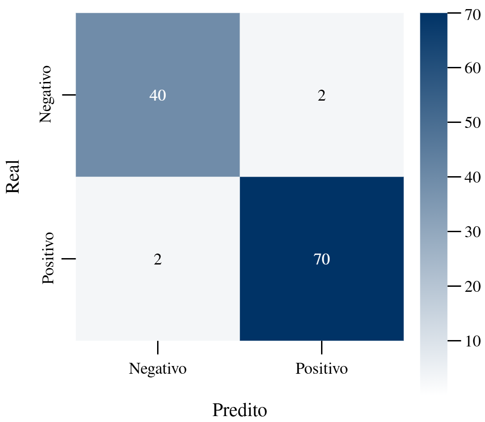

Processos gaussianos com inferência variacional para classificação binária
Introdução
Em problemas de classificação, modelos de aprendizado de máquina geralmente são capazes de apresentar predições pontuais com rigor; contudo, não raro negligenciam a quantificação da incerteza inerente a tais predições1 2. Essa limitação é particularmente crítica em aplicações reais, onde não apenas a precisão da previsão, mas também a confiabilidade e a quantificação da incerteza são cruciais para a tomada de decisões informadas3.
Neste contexto, os Processos Gaussianos (GP) representam uma das ferramentas mais teoricamente fundamentadas para aprendizado de máquina probabilístico4. Diferentemente de métodos paramétricos que assumem uma forma funcional específica, os GP atribuem distribuição probabilística a funções, de modo que qualquer subconjunto finito de pontos amostrais obedece a uma distribuição gaussiana multivariada5. Tornam-se, assim, adequados para construir intervalos de predição, pois delimitam a faixa esperada para o valor real com uma probabilidade específica.
No entanto, a inferência exata em GP para classificação é computacionalmente intratável devido à não-conjugação entre a verossimilhança de Bernoulli e a prior Gaussiana6. A Inferência Variacional (VI) surge como uma solução elegante a esse problema, transformando a inferência em um problema de otimização ao aproximar a distribuição posterior verdadeira por uma distribuição variacional tratável7. O método de ELBO (evidence lower bound) variacional maximiza um limite inferior da evidência marginal, garantindo que a aproximação seja tão próxima quanto possível da distribuição verdadeira dentro da família variacional escolhida.
Apresentamos uma implementação de Processos Gaussianos com Inferência Variacional (GP-VI) para classificação binária. A abordagem emprega o kernel Matérn8 com \(\nu=1{,}5\) para capturar estruturas complexas nos dados. Utilizamos todos os pontos de treinamento como pontos indutores (\(M = N\)), priorizando a expressividade do modelo sobre a eficiência computacional9. Os experimentos conduzidos no conjunto de dados Wisconsin Breast Cancer10 demonstram não apenas alta precisão preditiva, mas também a capacidade do modelo de fornecer estimativas de incerteza.
Fundamentação Teórica
Processos Gaussianos
Um GP é uma coleção de variáveis aleatórias, qualquer número finito das quais possui uma distribuição Gaussiana conjunta4. Formalmente, um GP é especificado por sua função de média \(m(\mathbf{x})\) e função de covariância \(k(\mathbf{x}, \mathbf{x’})\), onde
\[ \begin{aligned} m(\mathbf{x}) &= \mathbb{E}[f(\mathbf{x})] \\ k(\mathbf{x}, \mathbf{x’}) &= \mathbb{E}[(f(\mathbf{x}) - m(\mathbf{x}))(f(\mathbf{x’}) - m(\mathbf{x’}))]. \end{aligned} \]
Assim, temos \(f(\mathbf{x}) \sim \mathcal{GP}(m, k)\) para indicar que a função \(f\) segue um GP com função de média \(m\) e função de covariância \(k\).
Tipicamente, assume-se \(m(\mathbf{x}) = 0\) por simplicidade. A função kernel determina as propriedades de suavidade e características estruturais das funções amostradas do GP. Neste trabalho, utilizamos o kernel Matérn8 com \(\nu = 1{,}5\), o que produz funções uma vez diferenciáveis, oferecendo um equilíbrio entre suavidade e flexibilidade.
Seja \(r = \parallel\mathbf{x} - \mathbf{x}’\parallel\) a distância euclidiana entre dois pontos, o kernel Matérn é definido como:
\[ k_{\text{Matérn}}(\mathbf{x}, \mathbf{x}’) = \sigma^2 \left(1 + \frac{\sqrt{3}r}{\ell}\right) \exp\left(-\frac{\sqrt{3}r}{\ell}\right) \]
onde \(\ell > 0\) é o comprimento de escala que controla a suavidade da função, e \(\sigma^2 > 0\) é a variância de escala que controla a amplitude das variações.
Classificação com Processos Gaussianos
Para classificação binária, modelamos a função latente \(f(\mathbf{x})\) como um GP e conectamos essa função às observações binárias \(y \in {0,1}\) através de uma função de verossimilhança. Utilizando a verossimilhança de Bernoulli5:
\[ p(y \mid \mathbf{x}) = \text{Bernoulli}(\sigma(f(\mathbf{x}))) \]
onde \(\sigma(\cdot)\) é a função logística. O objetivo é computar a distribuição posterior \(p(f \mid \mathcal{D})\) dado o conjunto de dados \(\mathcal{D} = {(\mathbf{x}_i, y_i)}_{i=1}^N\).
Inferência Variacional
A posterior exata \(p(f \mid \mathcal{D})\) é intratável devido à não-conjugação entre a prior Gaussiana e a verossimilhança de Bernoulli. A Inferência Variacional aproxima a posterior verdadeira por uma distribuição variacional tratável \(q(f)\), minimizando a divergência de Kullback-Leibler11:
\[ \mathcal{L}_{\text{ELBO}} = \sum_{i=1}^N \mathbb{E}_{q(f_i)}[\log p(y_i \mid f_i)] - \text{KL}(q(f) \parallel p(f)) \]
O treinamento minimiza \(- \mathcal{L}_{\text{ELBO}}\), ou seja, maximiza o ELBO.
Parametrização Variacional
A inferência variacional aproxima a posterior intratável através de uma distribuição variacional \(q(\mathbf{u})\) sobre os valores da função nos pontos indutores \(\mathbf{u} = f(\mathbf{Z})\), onde \(\mathbf{Z}\) representa o conjunto de pontos indutores6. A distribuição variacional é parametrizada como uma Gaussiana \(q(\mathbf{u}) = \mathcal{N}(\mathbf{m}, \mathbf{S})\), onde \(\mathbf{m}\) é o vetor de médias e \(\mathbf{S}\) é a matriz de covariância.
Para garantir que \(\mathbf{S}\) permaneça positiva definida durante a otimização, utilizamos a parametrização de Cholesky:
\[ q(\mathbf{u}) = \mathcal{N}(\mathbf{m}, \mathbf{S}), \quad \mathbf{S} = \mathbf{L}\mathbf{L}^T \]
onde \(\mathbf{L}\) é uma matriz triangular inferior. Os parâmetros variacionais \(\mathbf{m}\) e \(\mathbf{L}\) são aprendidos através da maximização do ELBO.
Metodologia
Implementamos um modelo GP variacional cuja arquitetura consiste em: (i) um módulo de média que utiliza uma média constante \(m(\mathbf{x}) = c\); (ii) um módulo de covariância baseado em kernel escalonado \(k(\mathbf{x}, \mathbf{x}‘) = \sigma^2 k_{\text{Matérn}}(\mathbf{x}, \mathbf{x}’)\); (iii) uma distribuição variacional \(q(\mathbf{u})\) parametrizada via decomposição de Cholesky, onde utilizamos todos os \(N\) pontos de treinamento como pontos indutores (\(M = N = 455\)); e (iv) uma verossimilhança de Bernoulli para classificação binária.
Esta escolha de \(M = N\) elimina a aproximação esparsa, resultando em um modelo mais expressivo ao custo de maior complexidade computacional. Para conjuntos de dados maiores, uma estratégia com \(M \ll N\) seria necessária para escalabilidade9.
O treinamento é realizado maximizando o ELBO através de otimização baseada em gradiente. O processo de otimização atualiza simultaneamente: (i) os parâmetros do kernel (\(\ell\), \(\sigma^2\)); (ii) os parâmetros variacionais (\(\mathbf{m}\), \(\mathbf{L}\)); e (iii) as localizações dos pontos indutores \(\mathbf{Z}\), quando habilitado.
Para garantir estabilidade numérica durante o treinamento, utilizamos a parametrização de Cholesky para a matriz de covariância variacional. Além disso, adicionamos um termo de jitter (\(10^{-6}\)) na diagonal das matrizes de covariância quando necessário, e os gradientes são computados através de diferenciação automática, minimizando erros numéricos.
Durante a inferência, para um ponto de teste \(\mathbf{x}_*\), computamos a distribuição preditiva:
\[ p(f_{*} \mid \mathcal{D}, \mathbf{x}_{*}) \approx \int p(f_{*} \mid \mathbf{u}) q(\mathbf{u}) , d\mathbf{u} \]
Esta é uma distribuição Gaussiana com média \(\mu_*\) e variância \(\sigma_{*}^2\). A probabilidade da classe positiva é obtida propagando essa distribuição através da verossimilhança:
\[ p(y_{*}=1 \mid \mathcal{D}, \mathbf{x}_{*}) = \mathbb{E}_{f_{*}\sim\mathcal{N}(\mu_*,\sigma_{*}^2})\big[\sigma(f_*)\big] \]
A incerteza preditiva é quantificada pelo desvio-padrão \(\sigma_*\) no espaço latente, que reflete tanto a incerteza epistêmica quanto a aleatoriedade dos dados.
Conjunto de Dados
Utilizamos o conjunto de dados Wisconsin Breast Cancer10 12. Este conjunto contém 569 amostras com 30 características calculadas a partir de imagens digitalizadas de aspirados de nódulos mamários, com a tarefa de classificar tumores como malignos (1) ou benignos (0).
Os dados foram divididos em 80% treinamento e 20% teste usando estratificação para manter a proporção de classes. Todas as características foram padronizadas no conjunto de treinamento.
Métricas de Avaliação
Avaliamos o modelo usando um conjunto abrangente de métricas. As métricas de classificação incluem a acurácia,
\[ \text{Acurácia} = \frac{VP + VN}{VP + VN + FP + FN}, \]
o F1-Score, área sob a curva ROC \(\text{AUC-ROC} \in [0,1]\) e a área sob a curva Precisão-Revocação área sob a curva Precisão-Revocação \(\text{AUPRC} \in [0,1]\).
As métricas de calibração compreendem o escore de Brier:
\[ \text{EB} = \frac{1}{N}\sum_{i=1}^{N}(p_i - y_i)^2, \]
a perda logarítmica e o erro de calibração esperado (ECE).
Resultados Experimentais
Desempenho de Classificação
O modelo alcançou excelente desempenho preditivo, com acurácia superior a 96% e AUC-ROC de 99,34%, indicando alta capacidade discriminativa. O F1-Score de 97,22% demonstra equilíbrio entre precisão e sensibilidade. A AUPRC de 99,58% confirma o desempenho robusto mesmo considerando diferentes limiares de decisão.
| Métrica | Valor |
|---|---|
| Acurácia | 96,49% |
| F1-Score | 97,22% |
| AUC-ROC | 99,34% |
| AUPRC | 99,58% |
| Escore de Brier | 0,0355 |
| Perda logarítmica | 0,1397 |
| ECE | 0,3771 |
| Tempo de treinamento | 8,19s |
A matriz de confusão revela apenas 4 predições incorretas em 114 amostras de teste.

Calibração de Probabilidades
O escore de Brier de 0,0355 indica excelente qualidade das probabilidades preditivas, com baixa discrepância entre probabilidades preditas e observações reais. A perda logarítmica de 0,1397 confirma que o modelo atribui alta probabilidade às classes corretas.
No entanto, o ECE de 0,3771 revela um problema significativo de calibração13. Valores de ECE acima de 0,1 indicam má calibração, e um ECE superior a 0,3 sugere que o modelo é sistematicamente super ou subconfiante em suas predições. Esta discrepância entre o baixo escore de Brier e o alto ECE pode ser explicada pela natureza de cada métrica: o escore de Brier é uma medida global sensível à precisão geral das probabilidades, enquanto o ECE avalia especificamente se as probabilidades calibradas refletem a frequência real de acertos dentro de cada bin de confiança.
A alta precisão do modelo (96,49% de acurácia) combinada com má calibração sugere que o modelo é excessivamente confiante em suas predições, um fenômeno comum em modelos de aprendizado profundo e métodos variacionais13. Técnicas de recalibração pós-hoc, como temperature scaling ou isotonic regression, poderiam melhorar significativamente o ECE sem comprometer a precisão preditiva.
Análise de Incerteza
A tabela abaixo apresenta as estatísticas de incerteza preditiva, revelando um padrão aparentemente contra-intuitivo: a incerteza média das predições corretas (\(1{,}024\pm0{,}156\)) é ligeiramente superior à das predições incorretas (\(0{,}915\pm0{,}033\)).
| Estatística | Valor |
|---|---|
| Incerteza Média Global | 1,020 |
| Mediana de Incerteza | 1,004 |
| Desvio-Padrão de Incerteza | 0,154 |
| Q1 | 0,906 |
| Q3 | 1,134 |
| IQR | 0,228 |
| Incerteza Mínima | 0,736 |
| Incerteza Máxima | 1,357 |
| Incerteza Média (Predições Corretas) | 1,024 ± 0,156 |
| Incerteza Média (Predições Incorretas) | 0,915 ± 0,033 |
| Teste t bicaudal | t = 1,39, p = 0,168 |
Para avaliar a significância estatística desta diferença, realizamos um teste t independente comparando as distribuições de incerteza. O teste resultou em \(t = 1{,}39\) com \(p = 0{,}168\), indicando que não há evidência estatística de diferença significativa entre as incertezas de predições corretas e incorretas ao nível de significância de 5%.
Este resultado, embora aparentemente contra-intuitivo, pode ser explicado por diversos fatores. Primeiro, o número reduzido de predições incorretas (\(n = 4\)) limita o poder estatístico do teste. Segundo, as predições incorretas podem ocorrer em regiões de alta confiança devido a outliers, ambiguidade de rótulos ou ruído nos dados. Terceiro, o modelo pode exibir alta incerteza em regiões próximas à fronteira de decisão, onde ainda classifica corretamente devido ao limiar de 0,5. Finalmente, a incerteza no espaço latente captura tanto incerteza epistêmica (falta de conhecimento sobre a função verdadeira) quanto aleatória (ruído intrínseco), tornando a relação entre incerteza e correção de predições intrinsecamente complexa e não necessariamente monotônica.
Convergência do Treinamento
A perda ELBO convergiu suavemente de aproximadamente 0,79 na época 10 para 0,202 na época final, indicando otimização estável sem oscilações significativas. O tempo total de treinamento foi de 8,19 segundos, demonstrando a eficiência computacional da abordagem variacional mesmo utilizando todos os pontos de treinamento como indutores.
Discussão
Os resultados demonstram que Processos Gaussianos com Inferência Variacional constituem uma abordagem promissora para classificação binária com quantificação de incerteza. O modelo apresentou alta precisão preditiva no conjunto de dados Wisconsin Breast Cancer, com métricas superiores a 96% em acurácia, F1-Score, AUC-ROC e AUPRC.
O escore de Brier (0,0355) e a perda logarítmica (0,1397) indicam boa qualidade geral das probabilidades preditivas. No entanto, o ECE elevado (0,3771) revela um problema significativo de calibração, sugerindo que o modelo é excessivamente confiante em suas predições. Este é um resultado importante que destaca a necessidade de técnicas de recalibração pós-hoc em aplicações onde probabilidades bem calibradas são críticas.
A análise de incerteza revelou que não há diferença estatisticamente significativa entre as incertezas de predições corretas e incorretas, indicando que a relação entre incerteza epistêmica e acurácia é mais complexa do que inicialmente esperado. Este resultado ressalta a importância de análises estatísticas rigorosas ao interpretar estimativas de incerteza.
A abordagem variacional com ELBO permite treinamento eficiente, com tempo de treinamento de apenas 8,19 segundos mesmo utilizando todos os 455 pontos de treinamento como indutores. Esta eficiência, entretanto, não escala bem para conjuntos de dados muito maiores.
Conclusão
Este trabalho apresentou uma implementação de Processos Gaussianos com Inferência Variacional para classificação binária, avaliada no conjunto de dados Wisconsin Breast Cancer. Os resultados demonstram desempenho promissor, com 96,49% de acurácia e 99,34% de AUC-ROC.
Identificamos que, apesar do baixo escore de Brier, o modelo apresenta má calibração segundo o ECE, revelando excesso de confiança nas predições. Este resultado destaca o risco de avaliar uma única métrica de calibração.
A análise estatística de incerteza revelou que não há evidência de diferença significativa entre as incertezas de predições corretas e incorretas (\(p = 0{,}168\)). Este resultado enfatiza a complexidade da relação entre incerteza epistêmica e desempenho preditivo, sugerindo que interpretações simplistas da incerteza podem ser enganosas.
Reconhecemos importantes limitações deste estudo. Primeiro, os resultados são baseados em um único conjunto de dados pequeno, limitando a generalização das conclusões. Segundo, a escolha de \(M = N\) elimina os benefícios de escalabilidade da aproximação esparsa, tornando a abordagem impraticável para conjuntos de dados com dezenas de milhares de amostras. Terceiro, o ECE elevado indica que o modelo requer recalibração antes de ser usado em aplicações críticas onde estimativas de probabilidade confiáveis são essenciais.
Trabalhos futuros devem focar na validação em múltiplos conjuntos de dados de diferentes domínios e tamanhos, e na comparação sistemática com outros métodos probabilísticos, tais como Dropout Bayesiano e Deep Ensembles. Além disso, pode-se investigar métodos de seleção automática de pontos indutores para escalabilidade (\(M \ll N\)) e aplicação de técnicas de recalibração para melhorar o ECE. Por fim, há espaço para exploração de diferentes kernels ou combinações.
Referências
-
Y. Gal, “Uncertainty in Deep Learning”, Tese de Doutorado, Universidade de Cambridge, 2016. ↩
-
V. Kuleshov, N. Fenner, and S. Ermon, “Accurate uncertainties for deep learning using calibrated regression”, in Proceedings of the 35th International Conference on Machine Learning, vol. 80. PMLR, 2018, pp. 2796-2804. ↩
-
E. Hüllermeier and W. Waegeman, “Aleatoric and epistemic uncertainty in machine learning: an introduction to concepts and methods”, in Machine Learning, vol. 110. Springer, 2021, pp. 457-506. ↩
-
C. E. Rasmussen and C. K. I. Williams, Gaussian Processes for Machine Learning. MIT Press, 2006. ↩ ↩2
-
K. P. Murphy, Machine Learning: A Probabilistic Perspective. MIT Press, 2012. ↩ ↩2
-
J. Hensman, A. Matthews, and Z. Ghahramani, “Scalable Variational Gaussian Process Classification”, in Proceedings of the 18th International Conference on Artificial Intelligence and Statistics, vol. 38. PMLR, 2015, pp. 351-360. ↩ ↩2
-
D. M. Blei, A. Kucukelbir, and J. D. McAuliffe, “Variational Inference: A Review for Statisticians”, in Journal of the American Statistical Association, vol. 112, no. 518. Taylor & Francis, 2017, pp. 859-877. ↩
-
B. Matérn, Spatial Variation, vol. 36. Springer-Verlag, 1986. (Orig. 1960). ↩ ↩2
-
M. K. Titsias, “Variational Learning of Inducing Variables in Sparse Gaussian Processes”, in Proceedings of the 12th International Conference on Artificial Intelligence and Statistics, vol. 5. PMLR, 2009, pp. 567-574. ↩ ↩2
-
W. Wolberg, O. Mangasarian, N. Street and W. Street, “Breast Cancer Wisconsin (Diagnostic) [Data Set]”, UCI Machine Learning Repository [Online], 1993. Disponível em https://archive.ics.uci.edu/. Acesso em 2 de novembro de 2025. ↩ ↩2
-
S. Kullback and R. A. Leibler, “On information and sufficiency”, in The Annals of Mathematical Statistics, vol. 22, no. 1. Institute of Mathematical Statistics, 1951, pp. 79-86. ↩
-
W. H. Wolberg and O. L. Mangasarian, “Multisurface Method of Pattern Separation for Medical Diagnosis Applied to Breast Cytology”, in Proceedings of the National Academy of Sciences, vol. 87, no. 23. National Academy of Sciences, 1990, pp. 9193-9196. ↩
-
C. Guo, G. Pleiss, Y. Sun, and K. Q. Weinberger, “On Calibration of Modern Neural Networks”, in Proceedings of the 34th International Conference on Machine Learning, vol. 70. PMLR, 2017, pp. 1321-1330. ↩ ↩2